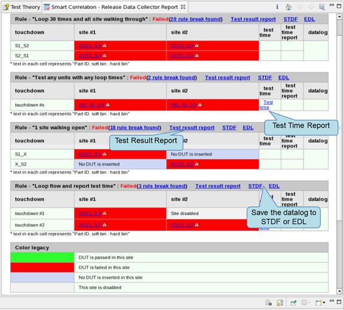
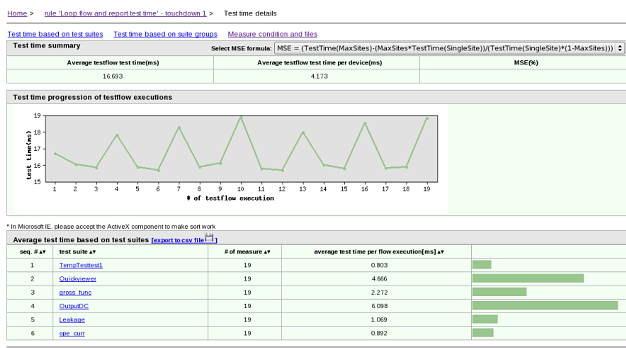
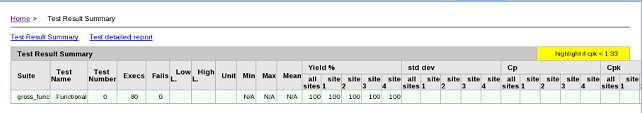

Collect Release Data
To execute a sample correlation process, select and execute an existing rule.
Before you begin
Make sure:
- You are using SmarTest 6.5.4 version or later.
- You use the "S&S_TP360_Plus_SOC" license.
- The test program is loaded.
- The testflow can be executed.
Procedure
-
To select the correlation process, click the
 icon in the Specify data collection rules for program release row. A dialog
opens, in which you can specify the rules. More than one rule can be selected.
icon in the Specify data collection rules for program release row. A dialog
opens, in which you can specify the rules. More than one rule can be selected.
For the details of defining the correlation rules, please check Defining sample correlation rules.
-
If you want to use the incremental way to collect the release data, click the icon in the Specify existing release report for appending row. A dialog opens,
in which you can select the report.
-
If you want to customize the options for report generation, click the
 icon to open the Preference page on Smart Correlation - Release
Data Collector, and then configure the preference setups.
icon to open the Preference page on Smart Correlation - Release
Data Collector, and then configure the preference setups.
Results
The Smart Correlation HTML report is generated in the directory <device_path>/TP360_Reports/ReleaseDatacollector/<testflow_name>_DateStamp/, and a hyperlink will be created under the /tmp/.vda/username/tpsc/TPSC_Report/, at last the report will be displayed in the Report view.
The Smart Correlation Excel report is generated in the directory <device_path>/TP360_Reports/ReleaseDatacollector/<testflow_name>_DateStamp/.

Click Test Time to open the test time report.

Click Test Result Report to view the test result.

Click STDF or EDL to save the datalog to a directory of your choice.
Functional changes
- Introduced in SmarTest 7.3.2